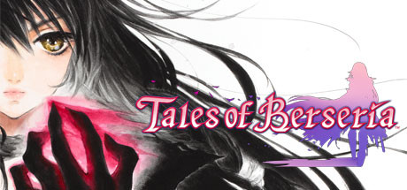

Tales of Berseria

Tales of Berseria (テイルズ オブ ベルセリア Teiruzu obu Beruseria) is the sixteenth Mothership Title in the Tales series. The title was announced on June 6, 2015 during the Tales of Festival 2015, while the localization was confirmed on December 21, 2015. Ufotable produced the animated cutscenes for the game. The main motif of the game is a conflict between emotion and reason. Tales of Berseria is a distant prequel to Tales of Zestiria. Its characteristic genre is "RPG of Discovering Your Own Reasons to Live" (君が君らしく生きるためのＲＰＧ Kimi ga Kimirashiku Ikiru tame no RPG).